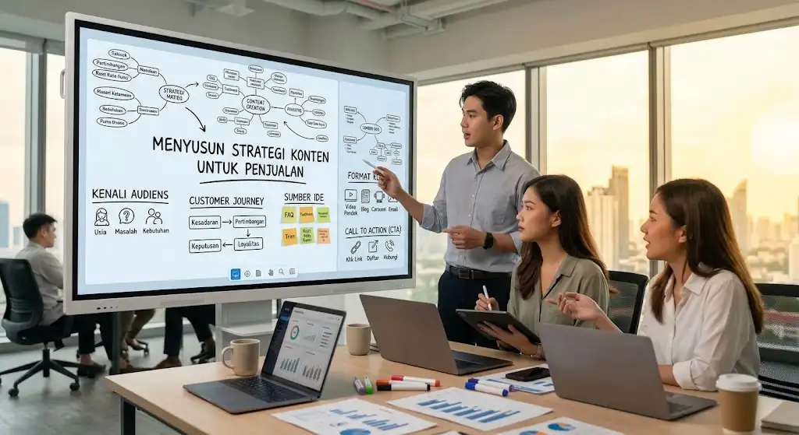

Content is King: Cara Menyusun Ide Konten yang Mampu Menghasilkan Penjualan
Di era digital, hampir semua bisnis aktif membuat konten, mulai dari foto produk, video pendek, hingga artikel blog. Namun tidak sedikit pelaku usaha yang mengeluh: konten sudah rutin diunggah, tetapi penjualan tidak ikut naik. Masalahnya sering bukan pada seberapa banyak konten dibuat, melainkan pada seberapa tepat konten itu disusun.
Ungkapan "content is king" memang benar, tetapi hanya berlaku untuk konten yang relevan, bermanfaat, dan mengarahkan audiens pada tindakan. Artikel ini membahas cara menyusun ide konten yang tidak hanya menarik perhatian, tetapi juga mendorong penjualan.
Daftar Isi
Poin Penting (Key Takeaways)
- Ide konten yang berkonversi tinggi selalu dimulai dari kebutuhan audiens, bukan dari fitur produk.
- Memetakan konten sesuai tahapan Customer Journey (Awareness, Consideration, Decision) mencegah "hard selling" yang berlebihan.
- Call to Action (CTA) yang jelas sangat krusial agar konten tidak sekadar viral, tapi menghasilkan tindakan.
- Evaluasi berbasis data memandu Anda menemukan formula format dan pesan yang paling efektif.
Mengapa Konten Berperan Penting dalam Penjualan
Sebelum membeli, orang jarang langsung mengambil keputusan. Mereka mencari informasi, membandingkan pilihan, membaca ulasan, dan menilai apakah sebuah merek layak dipercaya. Konten hadir di setiap tahap proses itu.
Konten yang baik membantu bisnis untuk membangun kepercayaan, mengedukasi calon pembeli, membedakan diri dari kompetitor, dan menjaga hubungan dengan pelanggan lama.
Langkah 1: Kenali Audiens Sebelum Memikirkan Konten
Ide konten yang baik selalu dimulai dari audiens, bukan dari produk. Banyak bisnis terjebak membuat konten yang hanya berisi promosi, padahal audiens lebih tertarik pada solusi atas masalah mereka.
Mulailah dengan menjawab beberapa pertanyaan berikut:
- Siapa target pembeli ideal Anda (usia, pekerjaan, kebiasaan, kebutuhan)?
- Masalah apa yang sering mereka hadapi?
- Pertanyaan apa yang paling sering mereka ajukan sebelum membeli?
- Apa yang membuat mereka ragu untuk membeli?
Sumber jawabannya bisa berasal dari kolom komentar, pesan langsung, ulasan pelanggan, atau percakapan tim penjualan.
Langkah 2: Petakan Konten Berdasarkan Tahapan Perjalanan Pembeli
Tidak semua konten bertugas langsung menjual. Agar efektif, susun ide konten berdasarkan tahapan customer journey.
- Tahap kesadaran (awareness). Audiens belum mengenal Anda dan belum sadar akan kebutuhannya. Gunakan konten edukatif dan menghibur. Contoh: "Kenapa Kulit Tetap Berminyak Meski Sudah Rajin Cuci Muka?"
- Tahap pertimbangan (consideration). Audiens membandingkan pilihan. Berikan konten seperti perbandingan produk, panduan memilih, atau tutorial.
- Tahap keputusan (decision). Audiens hampir membeli dan butuh keyakinan terakhir. Konten yang cocok adalah testimoni, demo produk, penawaran terbatas, dan jawaban FAQ.
- Tahap loyalitas. Setelah pembelian, jaga hubungan lewat tips perawatan produk, program loyalitas, atau ajakan berbagi pengalaman.

Langkah 3: Gali Ide dari Masalah dan Pertanyaan Audiens
Setelah memahami audiens, manfaatkan sumber-suber ide ini:
- Pertanyaan yang sering diajukan (FAQ). Setiap pertanyaan bisa menjadi satu konten tersendiri.
- Keberatan pembeli. Jika banyak yang bilang "mahal", buat konten yang menjelaskan nilai, bahan, atau proses di balik harga.
- Kisah pelanggan. Cerita nyata jauh lebih meyakinkan daripada klaim sepihak.
- Tren dan momen. Hubungkan produk dengan musim atau topik ramai secara relevan.
- Riset kata kunci. Gunakan alat riset untuk melihat apa yang benar-benar dicari orang.
- Konten kompetitor. Cari sudut pandang yang belum mereka bahas.
Langkah 4: Gunakan Format yang Tepat
Ide yang sama bisa disajikan dalam banyak format. Pilih sesuai kebiasaan audiens:
- Video pendek cocok menarik perhatian dan memperlihatkan produk secara visual.
- Artikel blog efektif membahas topik mendalam dan memenangkan pencarian Google (SEO).
- Carousel / infografis praktis merangkum panduan langkah demi langkah.
- Email unggul menjaga kedekatan personal.
Satu ide besar dapat dipecah: contoh, sebuah panduan artikel diolah menjadi tiga konten TikTok dan satu seri infografis.
Langkah 5: Tambahkan Ajakan Bertindak yang Jelas
Konten yang bagus tetapi tidak mengarahkan audiens akan kehilangan peluang penjualan. Setiap konten sebaiknya memiliki call to action (CTA) yang sesuai tahapannya.
Gunakan kalimat spesifik, seperti "Klik tautan di bio untuk melihat pilihan ukuran" atau "Chat kami untuk konsultasi gratis", dan hindari sekadar menulis "Beli sekarang" membabi buta di setiap postingan awal (awareness).
Langkah 6: Ukur, Evaluasi, dan Perbaiki
Penjualan tidak datang dari satu konten, melainkan dari proses belajar. Pantau metrik yang relevan: jangkauan, klik tautan situs, konversi penjualan, dan waktu retensi video.
Jika konten edukasi tutorial selalu menghasilkan penjualan terbanyak, perbanyak model konten itu. Jika promosi blak-blakan selalu di-*skip*, ubah pendekatannya ke arah *soft-selling*.
Kesalahan yang Perlu Dihindari
- Terlalu sering menjual tanpa memberi nilai tambah (edukasi/hiburan) bagi audiens.
- Mengikuti tren secara membabi-buta tanpa memikirkan relevansi dengan identitas merek.
- Tidak memiliki konsistensi, baik dalam jadwal unggahan maupun gaya komunikasi.
- Mengabaikan interaksi di kolom komentar dan pesan DM.
Konten yang menghasilkan penjualan bukan konten yang paling ramai atau paling mewah, melainkan konten yang paling memahami kebutuhan audiensnya. Mulailah dari mengenal calon pembeli, petakan konten sesuai perjalanan mereka, pilih format yang tepat, sertakan ajakan bertindak yang jelas, lalu evaluasi hasilnya secara rutin.
Dengan pendekatan yang terarah, konten tidak lagi sekadar aktivitas rutin di media sosial, tetapi menjadi aset bisnis yang bekerja membangun kepercayaan dan mendorong penjualan. Benar bahwa content is king, tetapi yang benar-benar memegang mahkota adalah konten yang tepat sasaran.